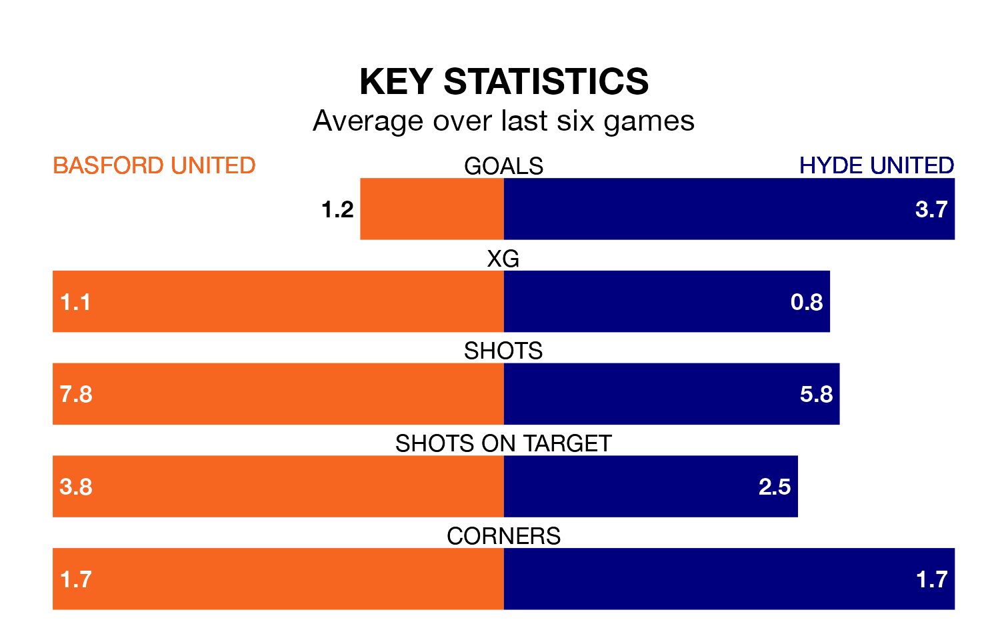

Hyde United visit Basford United at Greenwich Avenue on Saturday on the back of five consecutive wins in Northern Premier League.
Hyde have picked up 16 points from their last six games, and they face a Basford side who lost their last match, and have collected seven points from the last possible 18.
With 30 goals in 30 games so far this season, Basford are the league's joint-third-lowest scorers with 1.0 goals per game. And they are conceding at an average rate, letting in 51 goals at a rate of 1.7 per game.
Hyde, meanwhile, are above average scorers, with 2.0 goals per game, compared to a league average of 1.7. They have conceded 1.1 goals per game.
Hyde United are third in the table after 29 games, of which they have won 16 and drawn six, earning 54 points.
Basford United are 15 places behind the away team in 18th, with five wins and eight draws putting them on 23 points.
In the last 10 years, Basford and Hyde have played each other on seven occasions. Basford won three of them and Hyde four.
On average, Basford scored 1.4 goals and Hyde 2.3 in those matches.
Their last meeting was on September 23, when Hyde won 1-0 at home.
Basford's last match was on February 3, a 3-0 loss against Whitby Town.
Hyde beat Workington 2-0 last time out, also on February 3.
Updated: 10:01 (UTC), 06/02/24